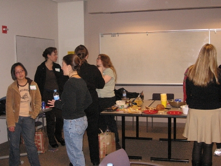
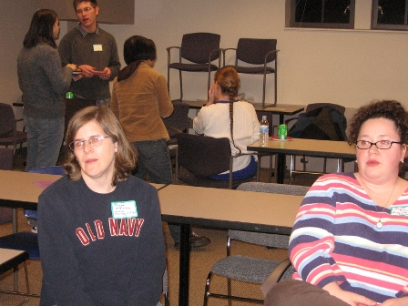
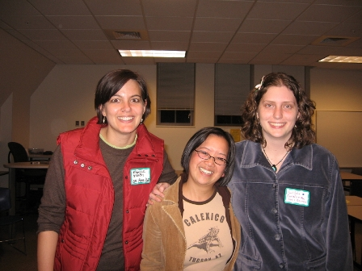
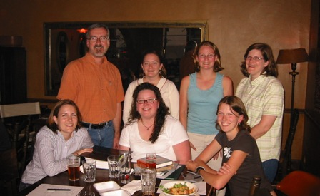

| Supporting Documentation |
| iPeer Guiding Document |
Former iPeer Site |
| “A significant leadership experience” |
|
Baseline In my life, leadership is a bit like breathing. It just happens whether I intend it to or not. Many times this led to being in charge, but I quickly figured out that management and leadership are different things. My aim is to be a positive influence on those around me. I reflected on what makes me a leader and identified these characteristics:
While I find myself leading in many aspects of my life, my most memorable accomplishments before this program were achieved through my position as library manager. I established educational programs for teens and adults in my branch. I reestablished connections with the local school librarians. Most significantly, I reformed the Friends of the Brier Library into an active fundraising group. My Development When I applied to the MLIS program, I choose to apply to the “distance” version despite living nearby. Having a family and working full-time, I needed the flexibility of online asynchronous education. Yet I didn’t want to give up the learning that occurs during interactions with classmates and instructors. Fortunately this program has quarterly face to face residencies and offers technologies for online community building. I jumped in and made the personal connections I needed to see me through. I believe that graduate education is much more than what happens within the confines of required coursework. Therefore I made a point to fit into my schedule iSchool projects where I could both learn and utilize my skills. At an open meeting during my second quarter, a first year student voiced a desire to know which students in the program lived near her. I understood the desire and had already made an effort to find other Seattleites I could call or meet in person. It was pointed out that due to privacy laws the school couldn’t share that information but if a student wanted to build such a list, it would be a great portfolio project. Having a strong desire to help others make the connections I had forged for myself, I expressed my interest in the project. I was soon put into contact with Linda Nixon from Oregon, a student one year ahead of me in the program. I knew right away this would stretch my leadership skills. While I’d held many leadership roles in my life, it was always within an established organization. Now I was not only responsible for building a structure from the bottom up, but I had to collaborate with a person living in a different state. Fortunately Linda and I established an easy online relationship and remained in regular communication throughout the process. My commitment to participating in the iSchool had afforded me knowledge of who to contact for input and support on such a project. I became “the front person” who presented iPeer to the community at large, wrote materials and coordinated details with student services and campus leaders. Linda became “the back person” who matched peers, monitored issues and worked with program participants. Because we kept each other well informed our roles were interchangeable when need be and we shared the workload. Entering the program in different years, we each had a unique set of contacts and experiences that added strength to our leadership. As we began working on the details of our program, I was nominated and elected Distance Representative for the Association of Library and Information School Students. This helped us establish our newly named “iPeer” program under the arm of ALISS, giving us web space and funds as needed. We quickly realized it wasn’t the continuing students who were looking for connections but the incoming students who needed a lifeline as they started out. By spring, we had established a web based questionnaire and I delivered flyers to be included in the mailing for new distance students. Linda began matching new and experienced students based on self-reported qualities such as location and career interests. As ALISS Representative, I began sending regular emails to the distance students reminding them of the many opportunities they have to get connected, including iPeer. By fall, we had 25% of the new students matched up with experienced ones. In a follow up survey, many students reported positive experiences with iPeer and expressed gratitude for the program. We also received feedback that overall this new cohort felt connected and warmly welcomed. Linda and I were determined that this tradition would continue. By the following winter we had created a guiding document with information on how to run the program and found three new administrators to replace ourselves. This fall it was rewarding to see the program continue with 50% of the incoming distance students participating. More important to me than knowing I can set up a program is to know that I established something with lasting value. Additional Experiences
|
|  |
|  |
|  |
|  |